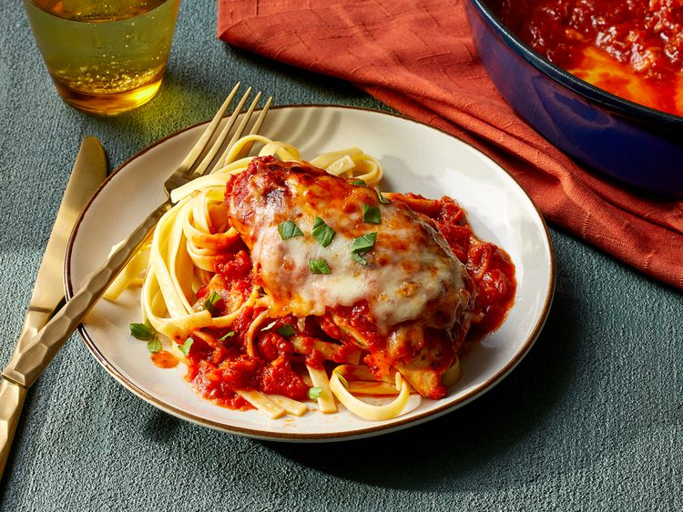

Baked Chicken Marinara

This baked chicken marinara could not be easier. Seasoned, pan-seared
chicken breasts bake in the same skillet with marinara and mozzarella
for a cozy, comforting dinner.
Ingredients
- 4 (8 ounce) skinless, boneless chicken breasts
- 2 teaspoons kosher salt
- 1 teaspoon dried Italian seasoning
- 2 tablespoons olive oil
- 1 (24 ounce) jar marinara sauce
- 8 ounces low-moisture, part-skim mozzarella cheese, shredded (about 2 cups)
- 1/4 cup torn fresh basil leaves
- cooked pasta, for serving (optional)
Steps
- Gather all ingredients. Preheat the oven to 375 degrees F (190 degrees C) with racks in upper and lower third positions.
- Sprinkle both sides of chicken evenly with salt and Italian seasoning. Heat oil in a deep, large oven-safe skillet over
medium-high heat. Add chicken and cook until golden brown on both sides, 3 to 4 minutes per side.
- Pour marinara sauce evenly over chicken and sprinkle with mozzarella. Cover with aluminum foil.
- Bake on the lower third rack in the preheated oven until cheese is melted, the sauce is bubbling around the edges, and
a thermometer inserted into thickest portion of chicken registers 165 degrees F (74 degrees C), 20 to 25 minutes.
- Remove skillet from oven and remove foil. Increase oven temperature to broil. Once preheated, return skillet to upper
third rack and broil until cheese is lightly browned in spots, about 2 minutes.
- Garnish with fresh basil and serve with pasta